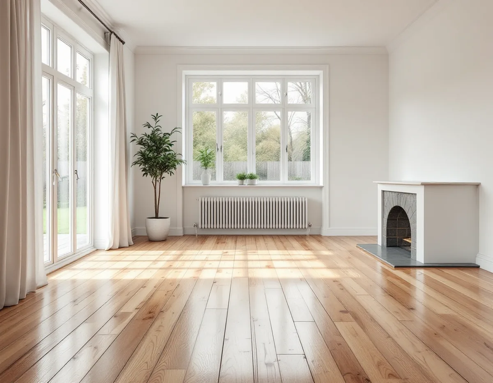
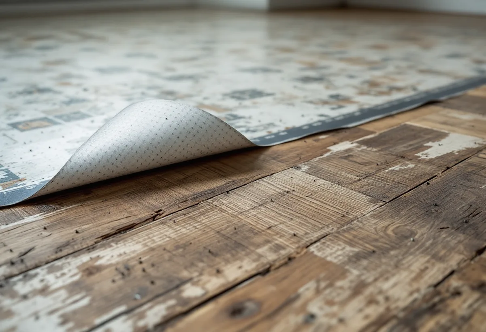

Platsbesök
Vi frågar efter byggår och lyfter mattan i ett hörn.

När en gammal plastmatta eller linoleummatta rivs i en villa i Hässelby ligger det ibland ett trägolv under som går att slipa fram.
Beskriv jobbet kort.
Något blev fel. Kontrollera uppgifterna eller ring 08 12 410 276.
Vi tittar på jobbet på plats innan du får offert.
Du ser vad som ingår och vad det kostar.
Vi drar av ROT direkt och sköter ansökan.
Geal Entreprenad AB, Bromma. Org.nr 559303-7566.

Men i hus från mitten av 1900-talet kan det också finnas asbest i underlaget. Geal Entreprenad AB slipar golv i Hässelby och tar reda på vad som ligger under innan vi river eller slipar.
Stadens områdesfakta för 2025 räknar 7 029 bostäder i Hässelby villastad, varav 4 757 småhus med äganderätt. Stadens vägledning Varsam utveckling av småhus- och villaområden beskriver hur många villor i Hässelby villastad på 1960- och 1970-talen ersattes av täta, stora grupper av enhetlig småhusbebyggelse, och hur tillkommande hus på tomter kring 600 kvadratmeter har kompletterat eller ersatt den äldre bebyggelsen.
Det gör att Hässelby har hus från många decennier sida vid sida. En villa från 1920-talet, ett radhus från 1960-talet och ett hus från 2000-talet har helt olika golv och underlag. Vi frågar därför efter byggåret och efter tidigare renoveringar innan vi föreslår något.
Boverket skriver att det främst är byggnader uppförda mellan 1940 och 1970 som innehåller asbest, och att det är sannolikt att det finns asbest någonstans i en byggnad från perioden 1940–1980. Asbest användes i byggnader främst från 1940-talet och en bit in på 1980-talet och förbjöds inom byggsektorn 1982. Provtagning och analys är enligt Boverket det enda säkra sättet att veta.
Svenska Byggnadsvårdsföreningen skriver i ett svar att det under mitten av 1900-talet ibland användes asbesthaltiga utjämningsmassor, och att man bör vara försiktig och använda andningsmask och skyddskläder om man behöver riva i sådant material. Hittar vi en okänd utjämningsmassa under en matta i ett hus från den tiden tar vi prov innan vi slipar eller river.
En läsare skrev till Byggnadsvårdsföreningen om en villa från 1920 där en linoleummatta från 1943 hade tagits bort, och där golvet under var spikat med mängder av spik. Svaret var att golvet förmodligen varit täckt med masonit och linoleummatta, och att alla spikar bör tas ur innan golvet slipas.
Golvbranschens riktlinjer SLIP 22 förklarar varför: spikar kan förstöra slippappret och ge gnistor med risk för dammexplosion i slipdammpåsen. Vi drar spikarna, fyller hålen där det behövs och ser efter om brädorna under mattan är hela nog att slipas. Är de inte det kan golvet behöva läggas om, och då finns mer under golvläggare i Hässelby.
Det är inte säkert att det finns ett trägolv under mattan. I ett annat svar berättar Byggnadsvårdsföreningen om en lägenhet i ett hus från 1913 där plastmattorna revs och inget trägolv fanns under. Golvet kan också vara ett trägolv av en kvalitet som inte var tänkt att synas, eller vara lagat med skivor.
Därför lyfter vi en bit av mattan i ett hörn innan vi lovar något. Finns det ett golv som går att slipa gör vi det. Finns det inte föreslår vi ett nytt golv i stället för att försöka slipa fram något som inte håller. Mer om tjänsten finns under golvläggning.
Vi frågar efter byggår och lyfter mattan i ett hörn.
Prov tas på okända underlag i hus från 1940–1980.
Rivning, spikdragning och slipning var för sig.
Mattan tas bort och spikarna dras.
Grov-, mellan- och finslipning efter golvets skick.
Lack, olja eller såpa efter ditt val.
Skatteverket räknar slipning av golv som rotarbete i ett småhus som du äger och bor i, och det gäller också att sanera asbest i samband med byggarbete. Att mäta asbest ger däremot inget rotavdrag.
Avdraget är högst 30 procent av arbetskostnaden, som mest 50 000 kronor per person och år, och rot och rut får tillsammans vara högst 75 000 kronor. Material och resor ger inget avdrag. Geal drar avdraget direkt på fakturan.
Golvytan, om mattan ska rivas, hur många spikar som ska dras, om asbestprov behövs, golvets skick och vilken ytbehandling du väljer. Efter ett gratis platsbesök får du ett skriftligt kostnadsförslag.
Parkett, trägolv, klinker och slipning.
Golvläggning i Stockholm →Takbyte, takbesiktning och plåtarbeten.
Takläggare i Hässelby →Villastaden, Hässelby strand och gård.
Takrenovering i Hässelby →Styckade tomter, gränser och kartan.
Attefallshus i Hässelby →Källarbadrum, backventil och bostadsrätt.
Badrumsrenovering i Hässelby →Riva, bygga nytt och delad tomt.
Byggföretag i Hässelby →Villastaden och radhusen.
Fasadmålning i Hässelby →Villastad, sommarstugor och grupphus.
Fasadrenovering i Hässelby →Villor, radhus och grupphus.
Fönsterbyte i Hässelby →Radhusen i Hässelby gård.
Fönsterrenovering i Hässelby →Slipa trägolvet – eller lägga nytt.
Golvläggare i Hässelby →Kök i villor och radhus.
Köksrenovering i Hässelby →Villastad, grupphus och radhus i Hässelby.
Målare i Hässelby →Plåttak efter eternit, rännor och beslag i Hässelby.
Plåtslagare i Hässelby →Altan, bod och plank i villastaden och radhusen.
Snickare i Hässelby →Eternit och asbest på taket.
Takbyte i Hässelby →Ny tapet i grupphus och villor.
Tapetsering i Hässelby →Hus som vuxit i omgångar.
Tillbyggnad i Hässelby →Grupphusen, eterniten och ventilationen.
Totalrenovering i Hässelby →Eller ring 08 12 410 276, mån–fre 08–17.
Beskriv jobbet kort.
Något blev fel. Kontrollera uppgifterna eller ring 08 12 410 276.